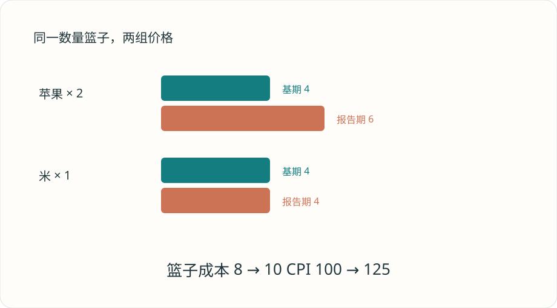
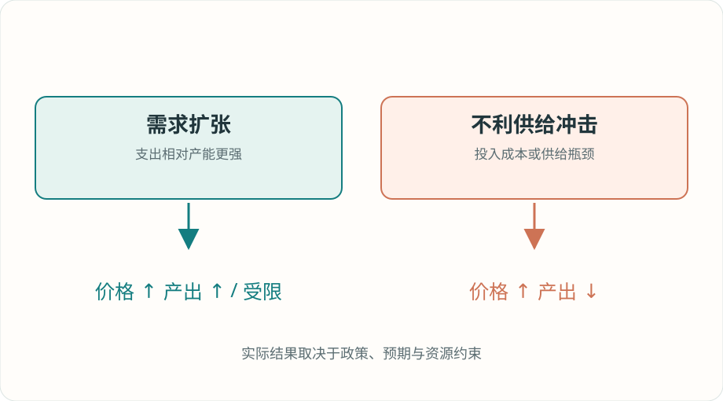

价格与通货膨胀
咖啡贵了 20% 并不表示所有物价涨了 20%。先计算一个消费篮子，再区分需求冲击与供给冲击。
个人看到的价格与统计物价指数有什么区别？
通货膨胀是经济中一般价格水平的持续上升，而非任何一件商品的价格上涨。CPI 根据消费者购买的商品与服务以及权重构造指数；权重不是每个人都一样，因此家庭实际感受与总体指数不同，并不表示指数必然错误。
用最简的固定篮子演算：基期家庭购买 2 个苹果（每个 2 元）和 1 袋米（4 元），总成本为 8 元。报告期苹果上涨至 3 元、米不变，同样数量的篮子需要 10 元。

固定篮子拉氏型价格指数的简化概念式；实际统计还有换样、质量调整和其他处理。
让同一个篮子的价格变化
商品数量保持苹果2个、米1袋，基期价格固定。
CPI、PPI、GDP 平减指数不是同一把尺
| 指标 | 覆盖对象 | 不能直接说明 |
|---|---|---|
| CPI | 典型消费者购买的商品与服务 | 每户家庭价格变化相同 |
| PPI | 生产者层级价格（因国家口径而异） | 一定等比例传导到消费者 |
| GDP 平减指数 | 境内最终生产的广泛产出价格 | 对进口消费品的覆盖与 CPI 相同 |
美国 BLS 在测量自有住房的居住服务时采用业主等价租金等方法，而不是把住宅购买价格直接放入 CPI。指数的范围和统计处理必须从编制机构的方法说明读取。
涨价的两种典型冲击，产出方向却不同
需求推动：当需求相对生产能力上升，价格有向上压力，短期生产可能增加。供给不利冲击：例如能源或中间投入成本上升，物价可能上升同时产出下降。两种情形的政策取舍不同，不能仅见价格上涨就推断经济过热。

预期、工资合约、金融条件与财政货币政策又可能放大或削弱初始冲击；「通胀只由单一原因造成」不是一般可取的解释框架。
名义工资增长，实际购买力可能下降
假设名义工资由 100 增到 105，消费价格指数由 100 增到 110。那么实际工资比率由 100/100=1 下降至 105/110≈0.9545，购买力相对减少约 4.55%。
实际工资指数应使工资和物价指数使用一致基期；这里是构造示例。
阅读物价数据的顺序
先核对范围（CPI 还是平减指数），再看同比/环比与是否季调，随后看能源、食品、住房等分项，最后判断变动来自需求、供给还是统计基期影响。只有明确机制，才能讨论政策。就业统计在 下一篇 引入另一套分母与口径。
来源与延伸阅读
以下资料用于核对经济学定义与制度口径。文章中的数字化教学模型均非实际宏观统计。